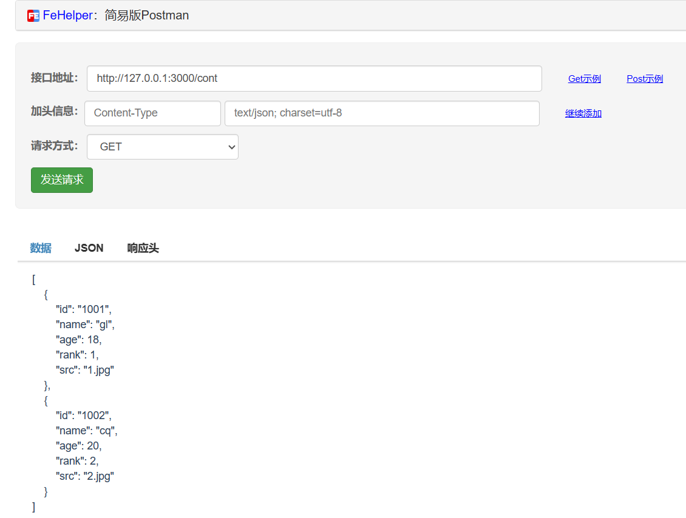

. 选择或创建一个文件夹如public作为各种资源的主目录；利用各种子文件夹存放不同的资源数据，如data存放json、imgs存放图片、music存放音乐等等
. json数据：创建json数据文件rank.json；这里以暴露2个接口为例；一个是info；一个是cont；这里包括了图片的src，可以给出完整路径，也可以仅仅给出文件名；数据加载后再2次处理
. 注意：id为字符串类型
{
"info":{},
"cont":[
{
"id":"1001",
"name":"gl",
"age":18,
"rank":1,
"src":"1.jpg"
},
{
"id":"1002",
"name":"cq",
"age":20,
"rank":2,
"src":"2.jpg"
}
]
}
. 图片数据：创建空白文件夹imgs，将对应的图片拷贝进去；作为在线资源提供给项目使用
. 其它资源，如视频、音频等
用来模拟数据的请求
安装浏览器插件FeHelper前端助手或下载更加专业的Postman（最近官网一直打不开）
. 获取数据 - GET
获取所有数据
http://127.0.0.1:3000/cont
根据id获取接口某个数据
http://127.0.0.1:3000/cont/1001
. 增加数据 - POST
. 修改数据 - PUT
. 根据id删除某个数据 - DELETE
http://127.0.0.1:3000/cont/1001